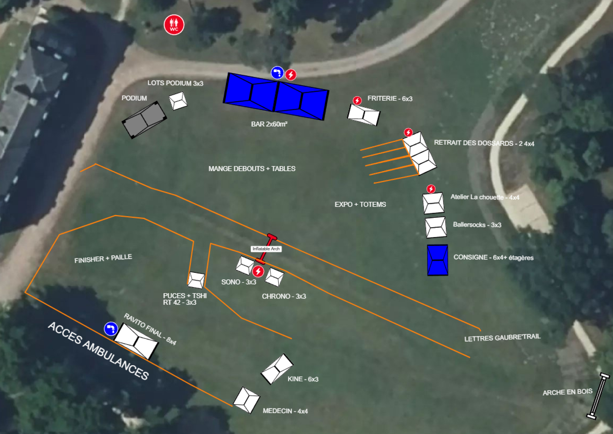

Chargement de Gaubre’Trail…
⛰
Carte 3D
👥 Gestion du trail
Plan d'arrivée
42 KM
· GAUBRE'TRAIL
Les parcours en relief
Retrouver mon poste
Tracer sur la carte
Cliquez pour ajouter des points.
Annuler
Terminer
Glisser pour déplacer · molette pour zoomer · clic droit pour pivoter
⚙ Parcours
×
